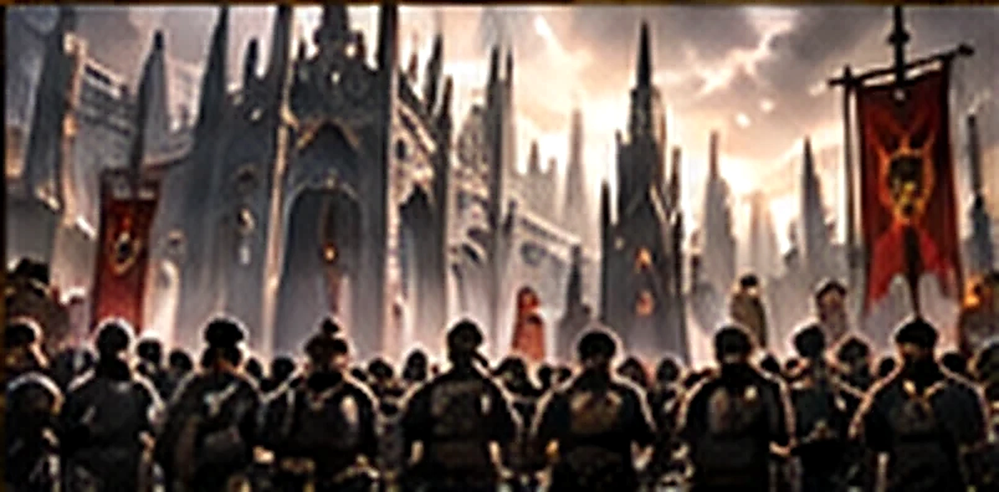
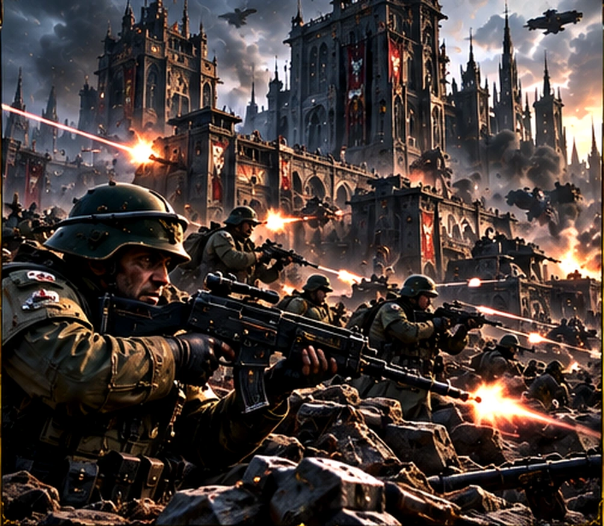
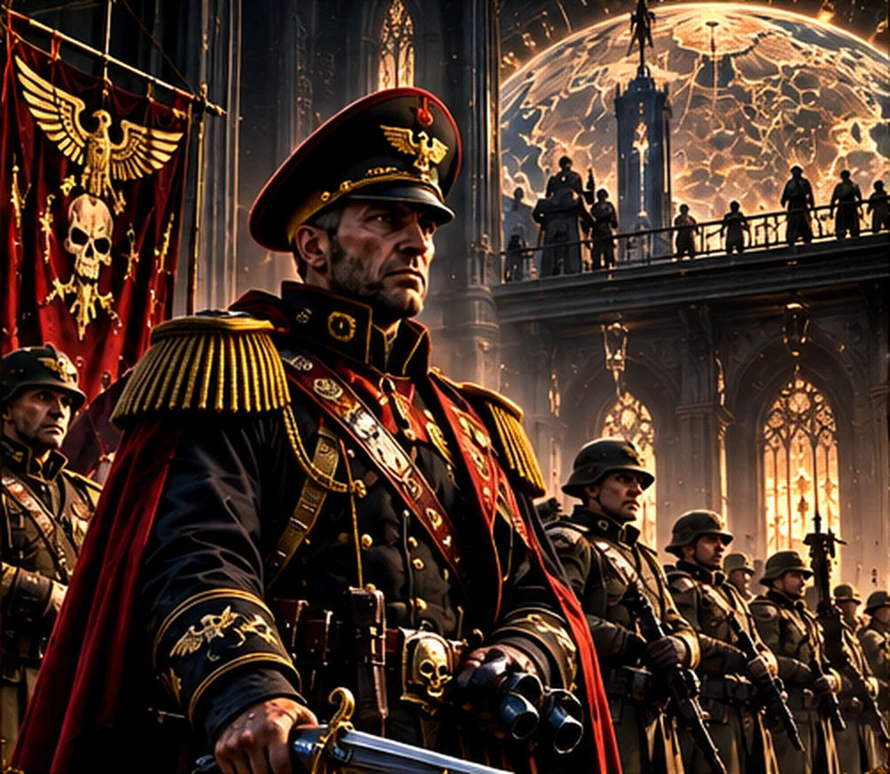
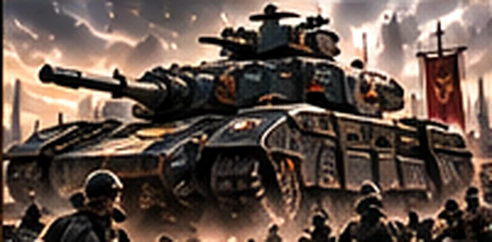

ASTRA MILITARUM

L’Astra Militarum forme l’immense force terrestre de l’Imperium. Là où les Space Marines interviennent en unités d’élite, la Garde impériale tient des fronts entiers avec des millions de soldats, des fortifications et une logistique titanesque.
LES ARMÉES DE L’HUMANITÉ

L’Astra Militarum forme l’immense force terrestre de l’Imperium. Là où les Space Marines interviennent en unités d’élite, la Garde impériale tient des fronts entiers avec des millions de soldats, des fortifications et une logistique titanesque.
Chaque régiment est levé sur un monde impérial, ce qui explique l’extraordinaire diversité des uniformes, des traditions et des tactiques.
DES MONDES AUX RÉGIMENTS

Les mondes de l’Imperium fournissent des troupes à la Dîme impériale. Certains régiments viennent de cités-ruches, d’autres de mondes agricoles, désertiques ou glacés.
Les Cadiens incarnent la discipline militaire ; les Catachans excellent dans les jungles hostiles ; les troupes de Krieg sont réputées pour leur endurance et leurs opérations de siège.
LE COMMANDEMENT ET LE COMMISSARIAT

Des officiers coordonnent les compagnies et les régiments au milieu d’une chaîne de commandement souvent complexe. Les commandants doivent composer avec les ordres, les distances interstellaires et les réalités du terrain.
Les commissaires veillent à la discipline et à la loyauté. Leur présence symbolise autant la détermination impériale que la dureté de ses institutions.
BLINDÉS ET ARTILLERIE

Le char Leman Russ est l’un des symboles de la puissance blindée impériale. Les transports Chimera accompagnent l’infanterie, tandis que les pièces d’artillerie frappent à grande distance.
La victoire repose souvent sur la coopération entre fantassins, ingénieurs, blindés et batteries d’appui, plutôt que sur les exploits d’un seul héros.
DES CAMPAGNES À L’ÉCHELLE GALACTIQUE

Les gardes impériaux défendent des mondes contre les Orks, les Tyranides, le Chaos et bien d’autres menaces. Les campagnes peuvent durer des années et mobiliser des forces venues de systèmes très éloignés.
La chute de Cadia a marqué profondément l’Imperium, sans faire disparaître l’héritage de ses régiments ni leur volonté de combattre.
LE COURAGE DES SOLDATS ORDINAIRES

Sous les bannières de l’Empereur, la Garde impériale rassemble des humains ordinaires confrontés à des adversaires extraordinaires. Leur force tient au nombre, à l’entraînement, à l’équipement et à une ténacité souvent remarquable.
Pour Total War: Warhammer 40,000, cette identité évoque de grandes formations, des lignes de tir et des blindés ; les mécaniques précises restent à confirmer.